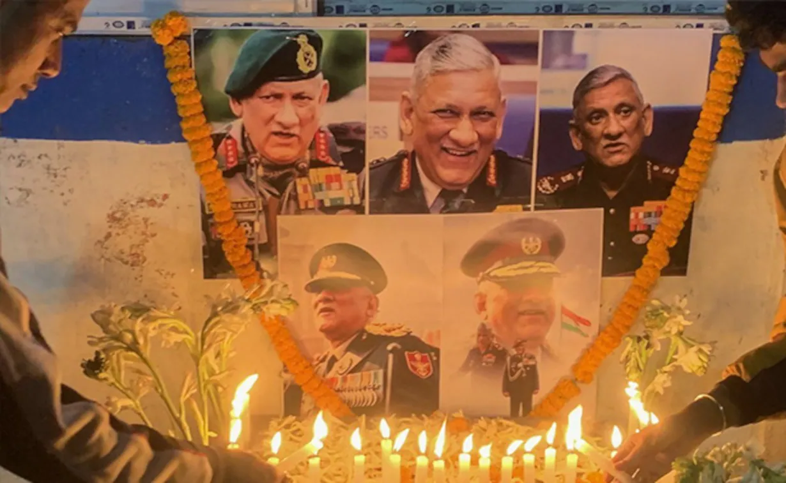

Death
On 8 December 2021, Rawat, his wife and members of his staff were amongst 10 passengers and 4 crew members aboard an Indian Air Force Mil Mi-17 helicopter flight en route from the Sulur Air Force Base to the Defence Services Staff College (DSSC), Wellington, where Rawat was to deliver a lecture. At around 12:10 p.m. local time, the aircraft crashed near a residential colony of private tea estate employees on the outskirts of the hamlet of Nanjappachatiram, Bandishola panchayat, in the Katteri-Nanchappanchathram area of Coonoor taluk, Nilgiris district.The crash site was 10 kilometres (6.2 mi; 5.4 nmi) from the flight's intended destination.Rawat's death and those of his wife and 11 others was later confirmed by the Indian Air Force. Rawat's liaison officer, Group Captain Varun Singh initially survived the incident, but later succumbed to injuries on 15 December.Rawat was 63 at the time of his death.
Rawat and his wife were cremated according to Hindu rituals with full military honours and 17 gun salute at Brar Square Crematorium in Delhi Cantonment on 10 December 2021.Their cremation was carried out by their daughters, who took their ashes to Haridwar and immersed them in the Ganges at the Har Ki Pauri ghat on 12 December.